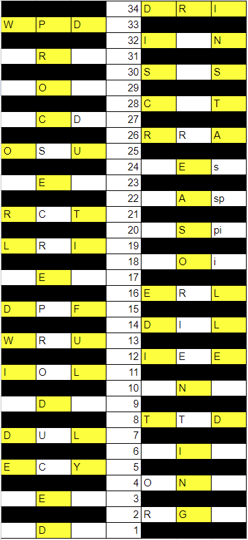

Solution: Jenga
Answer: INSIDE
Written by Jonathan
This is the final Jenga grid:
The top of the start of the Jenga tower reads ROW TEN. Reading from the 10th row of the tower, the answer is INSIDE.
Author's Notes
This puzzle was a real SUFFERING PROCESS to construct. This was the original Drop Tower puzzle idea. Here is the old version, if anyone wants more Jenga fun! Our internal testsolvers were put through much pain because of this (and then the Drop Quotes version) for Puzzle Rojak 1. This puzzle was eventually scrapped, because even though Wilson liked it (in fact, he likes this idea more than the Drop Tower seen in the last hunt), the answer was nutrimatic-able basically just from the word setups. With 3 more years and a shorter answer, I made the rules more explicit, and made it such that the tower could be solved both from the top and the bottom, which made the logic portion more interesting. In the 3 years that this puzzle wasn’t written, it appeared as part of this MIT mystery hunt puzzle.
Mid-hunt update: We have been very pleasantly surprised by all the very nice notetaking for this puzzle, Team Huh? sent this in, which we think is just beautiful!
Appendix
Let's start assembling the grid. CREDITORS has to belong to DISCREDIT, along with the fact that REASONING has already been formed on line 26, we can fill in the even numbered rows above 26. ORIENTING also has to go with the 5th column, that fixes all the rows on the right 3 columns. This means that REPRODUCED and SECEDED have to belong to the second column, and this fixes all the rows on the right 3 columns. Next thing to note is whether row 19 is on the left 3 columns or the right 3 columns, given that REPRODUCED has 10 letters and goes on the left, it clearly has to be the left 3 columns. In row 34, the R that comes from row 2 cannot come from the SPILLED column as those letters were removed since line 24, so that fixes CREDITOR. We can set up the grid as follows.

At this point there are many ways to break down this information, from the bottom or the top of the tower. Here is one sample path:
Row 34's missing information has to pieces from rows 31 and 32. Row 33's missing information has to be a piece from row 32. Row 32's missing information has to be a piece from row 30. At this point, we can solve everything above row 28 by carefully considering where known pieces go. We have an OR in column 4 from CREDITOR that only moves after 28, a D from DUTIFULLY that only moves after 27, and a R from REASONING that only moves after 26.
In row 34, the R is given to be from row 2, and has to belong to the R from creditor since column 6 was cleared in row 25 when SPILLED was formed. Row 32 is said to have a D (column 5, only column that moved), which goes to row 34. Hence the I comes from row 31. (column not fixed yet)
In row 33, the W belongs to row 28 column 5 (only column that moves), the D comes from row 29 column 1, since it goes to column 3 in row 33. The P then comes from row 31. (column not fixed yet)
In row 32, the I than comes from row 20 cannot come from column 4 since that is cleared by CREDITOR by line 28, and hence has to be the I from SPILLED. The D comes from row 1 column 1 (since column 3 is cleared by row 27 from DUTIFULLY). The N then comes from row 30 column 5 (only column that moves)
In row 31, the piece taken from row 22 has to be from column 6, as column 4 is cleared by row 28 when creditor is formed and column 5 doesn't move. This means it has to be the letter P from SPILLED. To fix the R and I we need to look to row 29.
Next, the D from row 27 from DUTIFULLY has to now go to 29 (it can't go to row 30 as the only unconfirmed piece moves up to row 32, where it cannot go back to the same column 5). This means to has to go to column 1 of row 29. This D then goes to 33 directly. Because of the column rule, The R from REASONING cannot go to row 29 as the other 2 pieces come from below row 10, and hence has to go straight to row 31 as well. This fixes the I from row 31 as coming from row 29. The O from creditor has to go to row 29 directly (only O left) and is the piece from row 4. Then the I comes from row 9.
We can look a bit further down, Row 28 takes a W from row 22 column 4. Row 26 takes an A from Row 1 column 3 (since column 1 already has the D). One of the 2 Rs comes from row 23 column 1. Row 25 takes the S from row 4.
Now we can turn our attention to the start. The first question to answer is how will SECEDED be formed? We need to get rid of RPROUC by row 25, so 1 each to rows 20-25 (since REPRODUCED is only formed at the end of row 19). Row 23 is given to be the O, which then goes to row 25, so has to go to column 3. Row 21 has to be the R from row 13. The U has to go to row 25. Row 22 has to be one of WAP, and has to be the P. The R from row 19 cannot go to row 20, so has to go to row 24. The C then has to go to row 20.
Row 6 goes to rows 19 and 24. The S in row 24 is in column 6, hence has to have come from column 4 in row 6, and then the L comes from column 6.
Row 19's R comes from row 16 column 5. In row 20, the I comes from row 14, hence the S comes from row 10 (column unknown).
Row 3 has 2 letters going to rows 22 and 27, the D comes from row 3 in row 27, hence in row 3 belongs to column 1, and Row 22 has an A coming from row 3 column 3, and hence the W comes from row 18 column 6.
Now looking at column 5, RIET have to disappear by row 26 also. The E has to go directly to row 23 (row 24's E is in the same column). The T has to go straight to row 21.
Almost there! The top is now pretty easy to fix given the letters are mostly fixed. The C in row 28 has to come from row 21 directly (cannot be the row 27 C since same column). The C in row 20 hence goes to row 27. The R in row 24 goes to row 26. Row 21 the C is given to be from row 2.
The missing piece in row 27 is stated to come from row 17. Hence the 2 Ss in row 30 come directly from rows 24 and 25. This missing piece has to be able to move upwards still, and hence is the only unaccounted for N in row 30 (cannot be row 28 since only 1 row above it), which has to come from row 17 column 3.
At this point, pieces marked in green are yet to be placed.
Last 5 pieces! The only piece that can go to the T is row 17 column 1 (every other column forms words by that point, and column 4 already moved the W to row 28).
The I in row 19 cannot come from row 18 (one row above), nor row 9 (same column), nor row 10 column 6 (same column as the L in row 6), and hence belongs to row 10 column 4, placing the S in row 10 column 6.
Of the last 2 pieces, the E comes from row 9, since column 4 already has an S in row 6 that goes to row 24. That leaves the R in row 23 coming from row 18, and we are done.